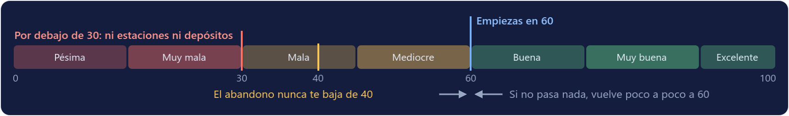

Ayuntamientos
Qué piensa de ti el ayuntamiento y por qué importa.
El ayuntamiento de cada ciudad valora a todas las empresas de 0 a 100. Un ayuntamiento harto te impide construir en su ciudad.


Qué mueve tu valoración
| Cambio | Por qué |
|---|---|
| +2 al mes | Cada estación tuya cercana a la ciudad en la que haya parado un vehículo en el último mes, para cargar o para entregar. Como mucho +6 al mes. |
| -1 al mes | Cada estación que tuvo servicio y lleva 90 días sin ver un vehículo. Esto por sí solo nunca te baja de 40. |
| -8 | Cada edificio de la ciudad que derribas. |
| -3 | Cada casilla de las calles de la ciudad que levantas. |
| -20 | Por cada accidente ferroviario a menos de 18 casillas del centro de la localidad más cercana, para cada empresa implicada. |
| -0,5 | Cada casilla de árboles que talas dentro de la ciudad o justo alrededor, como mucho -6 de una vez. |
| 1,5 al mes | Si no pasa nada, la valoración vuelve poco a poco a 60: el doble de rápido mientras el ayuntamiento te rechaza. |
- Las carreteras y los bosques de campo abierto no son asunto del ayuntamiento.
- La ventana de la ciudad muestra tu valoración y enumera lo que la ha movido últimamente.
- Cumplir la petición del ayuntamiento puede darte un gran impulso: ver Subvenciones y peticiones.
Recuperarla
| En la ventana de la ciudad | Precio | Valoración | Y además |
|---|---|---|---|
| Hacer publicidad | 9.000 $ | +4 | Durante 60 días tus estaciones de la ciudad ganan un +15% en sus valoraciones. |
| Plantar árboles | 4.000 $ | +7 | Hasta 30 árboles alrededor de la ciudad, lo que también sube el valor del suelo. |
| Financiar edificios | 40.000 $ | +3 | La ciudad crece deprisa durante 120 días. |